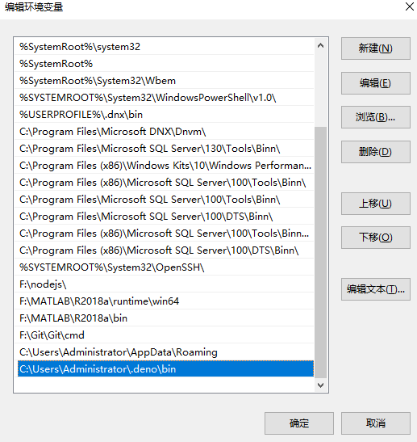

Pagic安装和使用
Pagic 是基于Deno实现的，所以使用前需要先安装Deno。
1. 安装Deno [不同系统]§
######Shell (Mac, Linux):
curl -fsSL https://deno.land/x/install/install.sh | sh
######PowerShell (Windows):
iwr https://deno.land/x/install/install.ps1 -useb | iex
######Homebrew (Mac):
brew install deno
######Chocolatey (Windows):
choco install deno
######Scoop (Windows):
scoop install deno
2. 安装 Pagic§
执行以下命令来安装最新版本的 Pagic：
deno install --unstable --allow-read --allow-write --allow-net --allow-run --name=pagic https://deno.land/x/pagic/mod.ts
若需要安装指定版本的 Pagic，则可以在安装的 URL 中加入版本号：
deno install --unstable --allow-read --allow-write --allow-net --allow-run --name=pagic https://deno.land/x/pagic@v1.3.1/mod.ts
3. 初始化项目§
要使用 pagic 构建静态网站，则该项目至少需要包含一个 pagic.config.ts 配置文件和一个 md/tsx 页面文件： #####新建如下目录文件：
site/
├── pagic.config.ts
└── README.md
其中 pagic.config.ts 一开始可以只导出一个空对象：export default {};
README.md 可以是一个简单的 Markdown 文件：# Hello world
4. 运行 pagic build§
windows操作系统在此之前需要配置环境变量：在Path中配置添加C:\Users\Administrator\.deno\bin

在 site 目录下运行以下代码：
pagic build --watch --serve
在览器打开 http://127.0.0.1:8000/ ，显示出README.md中的Hello world
#####build构建结果在dist目录中
site/
|── dist # 构建结果目录
| └── index.html
├── pagic.config.ts
└── README.md